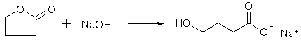

Lab procedures for the synthesis of GHB salts:
Please follow common Lab Safety procedures. Wear a lab coat and protective glasses. You will work with hot caustic solutions and solvents! Be aware of the risks associated with the manufacture of GHB! Never work alone!
Procedure:
Dissolve 130 grams (3.25 moles) of pure sodium hydroxide in 400ml of tap water in a 1000ml glass container while stirring with a
glass rod or similar. The dissolution is exothermic, and the solution will heat up. When everything has dissolved to form a clear solution,
slowly add 250ml (280 g, 3.25 moles) of gamma-butyrolactone in 50 ml portions with good stirring. The addition of gamma-butyrolactone to
the sodium hydroxide solution is also exothermic, and if it is added too fast the solution will begin to boil, and we don't want that. Keep
track of the temperature with an immersed thermometer. The addition of the gamma-butyrolactone will take somewhere between 20-30 minutes.
When everything has been added, let the mixture react for an additional 10 minutes with occasional stirring.
Now it is time to see if the reaction has gone to completion by checking the pH with universal pH paper. We are aiming for a pH of 7-8. If it is too high (pH > 8), then add 10 ml of gamma-butyrolactone and let react for a few minutes more. If the pH is too low (pH < 7), add a few ml of concentrated NaOH solution. Continue like this until the pH level is within the desired limits.
The solution is perfectly clear and tastes slightly salty. It may be slightly yellow colored, but not much if pure enough butyrolactone was used (distillation of the lactone before use takes care of this problem). If an acid is used to neutralize a too basic a solution (instead of adding more lactone), crystals of the sodium salt of the acid can precipitate in the solution, and the taste is severely impaired. The final solution will be around 750 mL 50% NaGHB. The solution can be concentrated (by boiling off excess water) to ~600mL without it crystallizing at room temp, but if concentrating as far as to ~500 mL it will invariably solidify.
Preparation of Sodium GHB using Sodium Bicarbonate (Baking Soda, NaHCO3)
Written by Chromic
Add 273 g NaHCO3 (3.25 moles) to 1125 mL distilled water in a glass container. Slowly bring the solution to a boil while stirring with a glass rod or similar. All of the baking soda will dissolve. Carbon dioxide will be seen leaving the solution as it comes to a boil. This is the sodium bicarbonate breaking down into a slightly strong base, sodium carbonate:
2 NaHCO3 -> Na2CO3 + H2O + CO2
Reduce the heat to a light boil, and slowly add 250ml gamma-Butyrolactone (280g, 3.25 moles). The addition is not immediately exothermic as with the sodium hydroxide synthesis. Keep this solution at a light boil for 30 minutes. Check the pH with universal pH paper. We are aiming for a pH around 7, but anything 6 to 8 is perfectly safe. If the pH is too high, add a small amount more GBL and continue to reflux.
The solution will be perfectly clear and should be absolutely colorless. If it is not perfectly colorless, i.e. if slightly impure butyrolactone was used and the solution has taken on a light yellow color, add about 100 mL of activated charcoal. Allow this to boil for 10 minutes. Cool the solution then filter, washing the activated charcoal two or three times with 50 ml portions of cold water. 410g of NaGHB will be made in this synthesis. This solution can be concentrated to about 50% NaGHB before it will start to crystallize. If you wish for a powder, heat until the temperature of the solution reaches 150°C then pour onto a flexible metal sheet and allow it to cool and solidify.
This synthesis is perfect for use where there is no ACS, Food or Electronics grade sodium hydroxide available.
Sodium GHB has been made from NaOH and butyrolactone in water[8], in methanol[10,11], and aqueous ethanol[12]
74 g analytically pure calcium hydroxide are suspended in 200 ml of tap water. 160 ml 4-butyrolactone are added in portions (each portion about 5 to 10 ml) and under stirring to this suspension at room temperature. After addition of 20 ml the reaction mixture warms to about 50� to 60�C. The addition of 4-butyrolactone is controlled such that the temperature remains between about 50� and 60�C, which takes about 1 hour. During this time the calcium hydroxide has dissolved practically completely. The reaction material is contaminated with a slight rust-yellow precipitate. It is thinned down with 300 ml methanol, is left for four hours to itself and is then filtered through a folded filter. The clear filtrate is cautiously treated with 200 ml acetone in the way that after each portion of acetone causing a precipitate time is allowed for the precipitate to redissolve. A waterclear solution is obtained which is placed for crystallization. After two hours of standing colorless crystals start to deposit. In this state the crystallization is accelerated by continuous addition of acetone (in total 100 ml). The crystallization time is 24 hours. The crystals are sucked off and are washed initially with 50 ml methanol and then additionally with 60 ml acetone. The crystals are dried at temperatures from about 60� to 80�C. in a drying cabinet. Yield: 230 g. Melting point 166-168�C. (immediately). The product is the waterfree nonhygroscopic calcium salt of the 4-hydroxybutyric acid. It is dissolvable as desired in water, the aqueous solution has a pH- value of 7 to 7.5. The salt can be stored as long as desired and does not change in air. Even upon storage no water is attracted from the air.
The residue crystallizes to a mass of colorless crystals, which is after dried at temperatures from about 60� to 80�C. Yield: about 105 g. Melting point 164-166�C. The product is Di-(4-hydroxybutyric) calcium. It is recrystallized by dissolving in little methanol followed by adding of acetone to cloudiness, and crystallizing in the cold.
Instead of methanol also ethanol and isopropanol can be employed for recrystallization with the same success. Without employing water containing alcohols as recrystallization medium or as additive of the recrystallization and purification no stable and in particular no nonhygroscopic calcium salts are obtained. The water content of the alcohols should be from about 3-10% by volume. The such obtained final product does easily dissolve in water, is not hydroscopic and has a pleasant aromatic odor.
60 g magnesium hydroxide (analytical grade) are suspended in 200 ml tap water under stirring. In a stream and under stirring 160 ml butyrolactone are mixed into this suspension. Then the mixture is heated on a water bath for 6 hours under stirring in a 2-liter-flask. The magnesium hydroxide dissolves practically completely. The flask is allowed to stand overnight, while contaminants deposit and the solution is decanted without effort from the contaminant deposit. The water clear decantate is initially stirred with 100 ml acetone for 10 minutes. The colorless sirupy liquid, which now turned more viscous, is mixed again with 100 ml acetone as described above, the acetone is again removed by decanting and the fairly viscous, colorless sirup is left to itself at room temperature for about 2 to 4 hours. It solidifies to a colorless crystal mass, which is comminuted in a mortar and dried for several hours in air. Melting point 76�C to 78�C. Yield: 314 g in analytically pure form.
This magnesium salt contains about 5 mole of water of hydration. It is not hydroscopic, is stable and can be stored for arbitrary long times. By drying over several hours at 40� to 50�C it loses part of its water (1 mole) of crystallization and then melts at 118� to 120�C. Waterfree magnesium 4-hydroxybutyrate can be produced by removal of water by sublimation and/or evaporation of water under decreased partial pressure of water and at elevated temperature or by crystallization from a solution containing an organic solvent. The waterfree salt melts at 172-174°C. The chemical analysis shows 10.50 weight percent magnesium (calculated 10.55 weight percent magnesium). All modifications are nonhygroscopic and stable during storage. 1g of the magnesium salt dissolves in 2 ml water at room temperature, the pH of the aqueous solution is 7.
It dissolves easily in water, methanol and ethanol, it does not dissolve in ether and hydrocarbons, it is not hygroscopic, is storable and has a pleasant aromatic odor.
The Lithium and Ammonium salts of GHB would be dangerous to ingest. Lithium ion is toxic, and together with NH3 lactone becomes pyrrolidone.
Attempts have been made to prolong and/or slightly modify the effects of GHB, with small alterations of the GHB molecule. This section is also known as GIHKAL (GHB-analogs I Have Known And Loved :-)
Dosage: 1-3ml
Duration: 2-5h
Qualitative effects: (as repported by Methaco(s)mic) I have only used doses between 1.0 and 1.5ml. 1.0ml is not felt much and 1.5ml is like a medium dose of GHB. Ordinary 1,4-butanediol feels to me almost exactly as GHB, so what does acetylation do to the effects? It can be felt after 5-10 minutes (tastes like gasoline) the peak of effects occur at the 40 minutes point and then the intoxication gradually dissipates during the following hours and at the 3 hour point the intoxication is over. Perhaps a weak sedation and muscle relaxation lasts to the 5-hour point. The effects are GHB like but not as nice and not euphoric, nothing sexual and the disinhibition is minimal. Relaxing and anxiolytic properties, but not fun. Rather much like MAB perhaps, but without the nice long-lasting positive effects. My stomach doesn't like this stuff I feel like I have to burp but I can't.
Comment: The smell is very nice and flowery, but taste is unpleasant and gasoline-like. The water solubility is very low.
Synthesis: 20ml 99% 1,4-butanediol and 45ml 98% acetic anhydride was mixed in a 100ml round-bottomed flask and boiled under reflux for 30 min. The mixture was poured into 200ml water and extracted with 2x70ml chloroform, the pooled chloroform extracts washed with 2x50ml saturated sodium carbonate solution, the organic layer dried over anhydrous magnesium sulfate, filtered and the chloroform removed by distillation. The residue was then distilled with aspirator vacuum to yield 25ml DABD.
Dosage:
Duration:
Qualitative effects:
Comment: T-HCA is 16% more potent as a GHB receptor agonist than GHB itself, and most T-HCA (trans-4-hydroxy-2-butenoic acid)
derivatives are more active than the corresponding GHB homologs. The 4-CH3 analog is 9%, and the 4-Ph analog is 27% more potent than GHB
itself. The 4-C6H11 analog is 16% less potent than GHB, and cis-4-Hydroxy-Crotonic Acid (C-HCA) is inactive. T-HCA has also been
identified as a naturally occurring substance in the CNS, which dismisses the theory of T-HCA just being a synthetic semi-rigid analog of
GHB, but as a possible endogenous receptor ligand, which also competes at GHB receptors, and possibly possesses specific functions of its
own.
To a solution of 20g (0.23 mole) of crotonic acid (2-butenoic acid) in 200ml of dry benzene, 45.6g (0.25 mole) of N-bromosuccinimide was added under nitrogen. The solution was brought to a gentle reflux with stirring and was treated with 0.5g (3.7 mmol) of 2,2'-azobisisobutyronitrile as a radical initiator. Refluxing was continued for 2 h, and the solution was cooled to 10�C. The resulting white precipitate was filtered off, and the filtrate was evaporated in vacuo. The residue was taken up with 200ml of carbon tetrachloride and the mixture was cooled to 0�C and filtered. The filtrate was evaporated in vacuo to give 38 gram of a mixture consisting of 85% 4-bromocrotonic acid and the rest unreacted starting material. Pure 4-bromocrotonic acid can be obtained by multiple recrystallizations from petroleum ether.
To a cold solution of 12g (72 mmol) of 4-bromocrotonic acid in 120 ml of water was added dropwise 240 ml of a 2M KOH solution in water. After the addition was completed, the solution was successively heated under reflux for 5 minutes (oil bath temp 120�C), cooled in an ice bath, and acidified with dilute H2SO4. The medium was evaporated under vacuum, and extracted with ethyl ether. After the drying and evaporation of the solvent, the residue was chromatographed on a silica gel column eluted with a mixture of EtOAc:MeOH (97:3) to yield 5.22 g (71%) of pure T-HCA. After recrystallization from EtOAc, the mp was found to be 108�C.
Dosage: Similar to GHB.
Duration: Similar to GHB.
Qualitative effects: See my 4-Methyl-GHB Document
Comment: According to reference [13], GHV is 15% more potent as a GHB receptor agonist compared to GHB itself, and nearly as potent as T-HCA
(trans-Hydroxy Crotonic Acid). The 3-methyl derivative of GHB (GHV is the 4-methyl derivative) is 7% more potent, and the 4-phenyl derivative is just slightly more potent
than GHB itself.
Synthesis: 8 grams (0.2 moles) of sodium hydroxide was dissolved in 50 ml of methanol with gentle heating, and some insolubles was filtered off. 20 grams of gamma-valerolactone (0.2 moles) was added as fast as the exothermic reaction allowed, and the solvent was evaporated in vacuo and the wet, soapy residue was dried in a desiccator over CaCl2. The crude product was finely ground in a mortar, placed in a buchner funnel, washed with 200 ml of acetone and sucked as dry as possible at the pump. After drying over CaCl2, the Sodium gamma-Hydroxy-Valerate, a deliquescent, white, crispy and slightly soapy powder, weighed 26.9 grams (96% of theory) and had a pleasant aromatic odor, and the taste was not unlike that of Sodium GHB itself.
Synthesis: Same as for 4-Methyl-GHB
The obvious precursor for the synthesis of GHB is gamma-Butyrolactone. It can be made from pre-precursors such as Tetrahydrofuran (THF) with oxidants such as Ruthenium tetroxide[2], calcium hypochlorite[3] and nitric acid[4].
4-Halo-butyric acid derivatives (chloro, bromo, iodo) can also be used. As
in the synthesis below, they can be converted to gamma-butyrolactone by
distillation with sodium methoxide.
gamma-Butyrolactone from 4-bromobutyric acid: To a solution of 7.8 g of sodium in 500 cc of absolute alcohol was added 60.5 g of 4-bromobutyric acid. The reaction mixture was boiled under a reflux condenser for about five hours. During this time sodium bromide separated. The alcohol was distilled from a steam bath, and the lactone was separated from the sodium bromide by extraction with ether. The ether was evaporated and the lactone distilled under ordinary pressure. The yield was 21.2 gram (67%) of product boiling at 202-206�C.
An alternative may be free radical chlorination of butyric acid with sulfuryl chloride in the presence of peroxides[6], and separate the isomers through distillation, make the sodium salt of 4-chlorobutyric acid, and cyclize to the lactone as with the 4-bromo derivative above.
gamma-Butyrolactone can also be made from 4-methoxybutyric acid[7], 3-phenoxypropylcyanide[8], gamma-diethylaminobutyric acid[1] and beta-chloro ethyl vinyl ether[18] as well as many other a bit too exotic chemicals. Industrially, it is commonly made by reacting acetylene with formaldehyde under high temperatures and pressures.
A very unusable synthesis comes from Journal of Chemical Education [20]:
A five-membered cyclic ester, gamma-Butyrolactone, was prepared from GHB
using a microscale reflux method. Cyclization yielded a product with a boiling
point significantly greater (by 129 �C) than that of the open-chain analogue.
CA 54; 4393i
Outlines of a purification of gamma-butyrolactone.
US Pat No 4,851,085
Purification of gamma-butyrolactone to remove metal ions and color-forming impurities.
US Pat No 3,891,511
Multi-stage purification of 1,4-butanediol
Other Texts Worth Looking Up
US Pat No 4,983,632
Alcoholism treatment with GHB preparations and pharmaceutical compositions designed to hide the taste of GHB.
CA 59; 11234e
Sketchy synthesis of GHB and GABA and some pharmacological data.
US Pat. 5,380,937
Synthesis of salts and amides of GHB with improved pharmacological properties.
General Info Sites
Cognitive Enhancement Research Institute
The Lycaeum GHB Pages
Erowid's GHB Pages
Michael Cohn's GHB FAQ